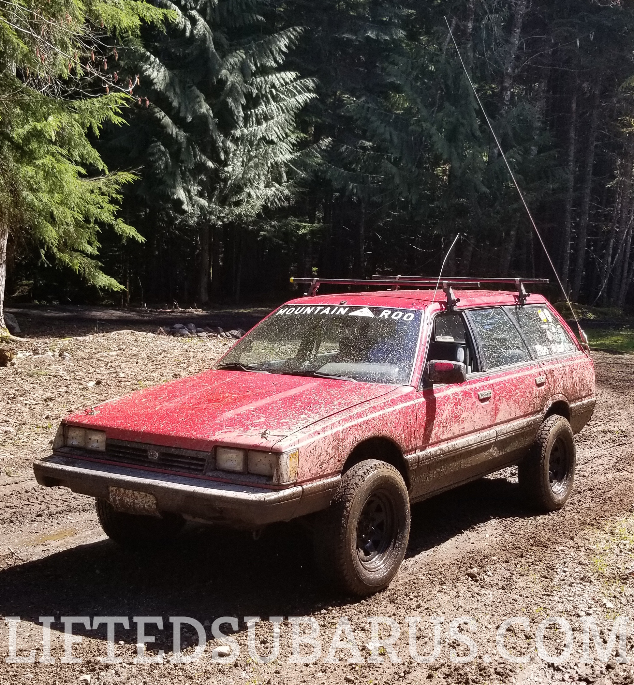

In 2017 I bought my first Subaru: a worn-out $440 1987 Subaru DL wagon for the
OG Oregon Gambler 500. Two weeks later photobucket
broke the internet, and most of the threads I was relying on to modify the car. Later that year I started seriously building on the car with a home-built lift kit with some blueprints I was lucky to find and using advice I got from
Mtn Roo Rainier, swapped in a phase 1 ej22, changed the wheel bolt pattern to toyota/chevy 6x5.5 and added 27s.
My goal is not to replace
USMB,
NASIOC, or any other messaging board, but to self host as much content as possible to ensure it doesn't go away again in the future.
This is where you come in. Working on a write-up? Awesome. Post it to your favorite messaging board, and send me it. Lets make sure these writeups don't disappear in the future. Don't own content and just want me to link to it here? cool. Email me your list of your favorite build threads. The focus is on subaru builds, but generic build info like bumpers, tire carriers, fender folding techniques are all welcome.
Stay Muddy, Friends
-Doug
El Chubra,
my phase 1 ej22 swapped 87 dl
